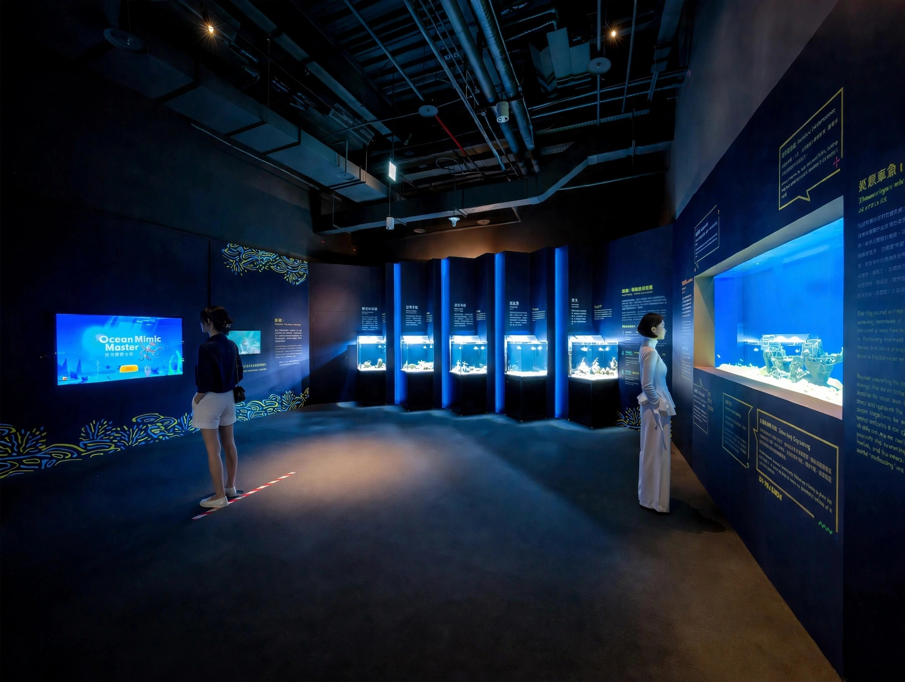
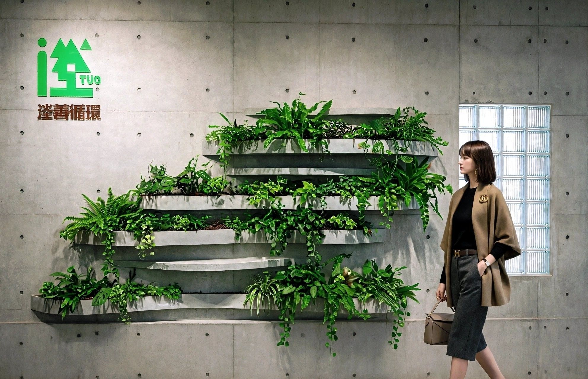
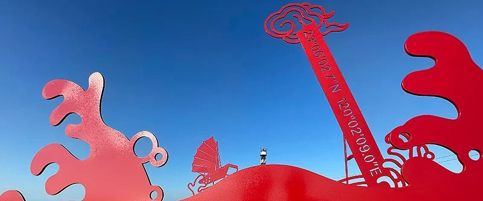
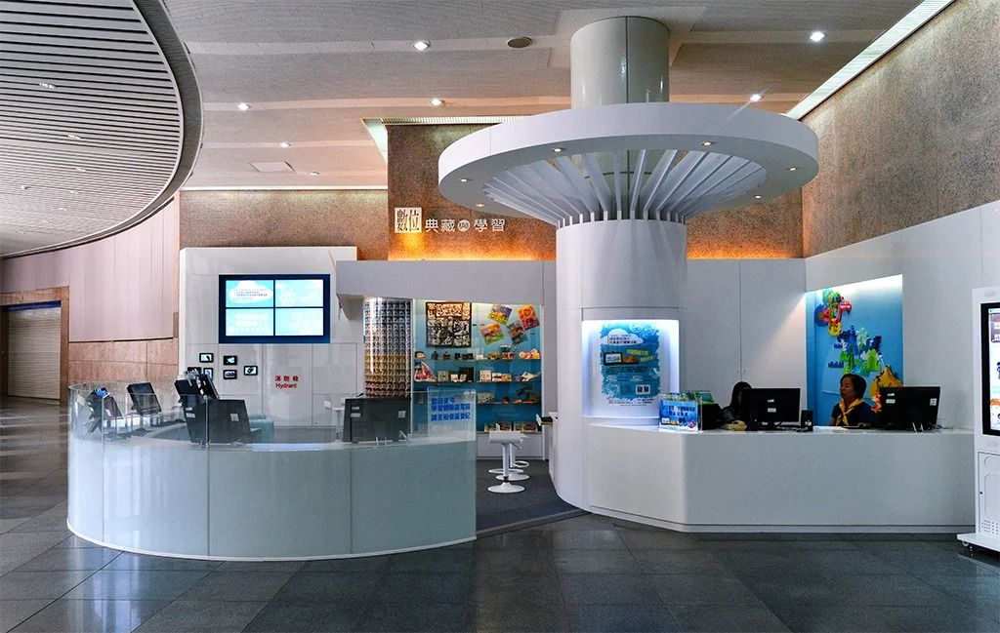

Masters of Marine Illusion: Mimicry & Camouflage
VIEW PROJECT →
Step Into a Breathing Magical Universe of Light and Shadows
VIEW PROJECT →
Work That Turns Spaces Into Experiences.
A selection of exhibitions, interiors and visual environments delivered across Taiwan.

Seeing Is Believing
Masters of Marine Illusion: Mimicry & Camouflage

Cat Art Museum
A Super-Healing World by Shu Yamamoto

Universe — LED Kinetic Light
500 Pieces of LED Kinetic Light

Beyond Just an Exhibition
Step Into a Breathing Magical Universe of Light and Shadows

Eternal Notre-Dame
International Debut of the VR Immersive Exhibition in Taiwan

The Missing Scientist
Electromagnetic Horizon II

Changhua Flower Festival 2023
From Leftover Lot to Landmark — Ørsted at the 2023 Changhua Flower Festival

Experience the Yokai World
100 Stories of Yokai Exhibition

Offshore Wind O&M Building
Learning Center Decorating Modifications

The Future Is Worth It
TCCGE Green Energy Vision Pavilion

Energy Taiwan 2022 — Ørsted
Ørsted Exhibition Stand

The Westernmost Point of Taiwan
A Paper-Cutting Landmark

Securities Company Office
A Contemporary, High-End Workplace

Green Energy Education Observation Platform
Changhua Coastal Industrial Park

The World of Semiconductors
TSMC × National Museum of Natural Science

Detention — Reality Experience
Songshan Cultural and Creative Park & The Pier2 Art Center

Story Telling by the Ancient People
by the Ancient People

Amazing Homeland
Cheng-Hsiung Chen's Collection of Taiwanese Indigenous Artifacts

Detective Conan
Science Investigation Exhibition — Taipei & Kaohsiung

Ninety Years of Sky
R.O.C. Air Force Academy 90th Founding Anniversary

See the Ministry of Culture
One History. Six Departments. Countless Everyday Moments.

Mobile Museum
A Cool Adventure of Reality and Imagination

La Fortuna Bordada
Taiwanese Embroidery in Madrid

20-Year Serialization — Conan Exhibit
Congratulatory Exhibit "Conan Exhibit"

Tibetan Thangka Art
Sacred Buddhist Painting Exhibition

I Love Taiwan
2013 Asian Art Biennial

NMNS TELDAP
Digital Archives Exhibition

Hakka Culture Development
Development Center

Highlights of NMH Collection
Collection Exhibition

The Hunt of the Celestial Court
Wang Ye Worship in Donggang

Just Only Environment Protection
Environment Protection Brochure

Fullchamp Brochure Design
Brochure Design

From Dragon to Beast
The Age of Giants and the Rise of Mammals

Disaster Prevention Hall
921 Earthquake Museum of Taiwan

Tokyo Ghost Hospital
A Horror Experience by TOEI

Jehol Biota Special Exhibition
Special Exhibition